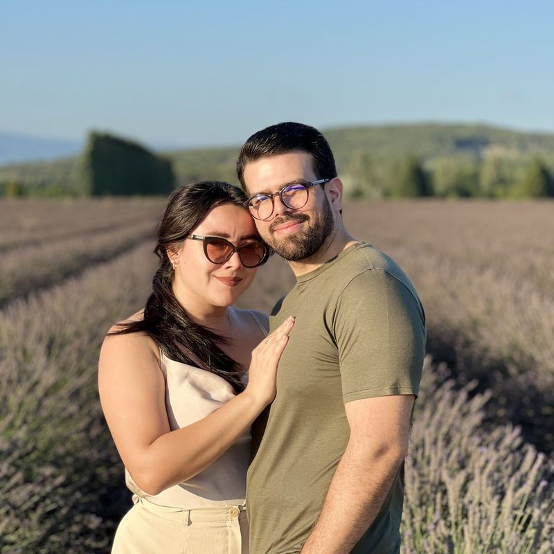

Ronaldo
&Celina
Sua retrospectiva chegou, Celina.
E ela é sobre nós.
Era uma vez,
3 de fevereiro
de 2013.
Naquele dia começava a nossa história. … dias depois, ela continua sendo a minha favorita.
Nós dois,
em tempo real
E cada segundo valeu a pena.
Esse aqui também. E esse. E esse…

“I have loved you for a thousand years,
I’ll love you for a thousand more.”
Os capítulos
que definiram a gente
Nosso Top 5
em repeat
Romance de
longa duração
Com influências de road trip, café passado na manhã de domingo e latidos felizes ao fundo. Crítica especializada: “um clássico que só melhora com o tempo.”
Dia dos Namorados
de mãos dadas
Desde 2013, todo 12 de junho tem você do meu lado. Feliz Dia dos Namorados, meu amor. Que venham, no mínimo, outros mil.
De 2013 até aqui, entre países, domingos e quilômetros, a melhor parte de todos esses anos sempre foi simples: você.